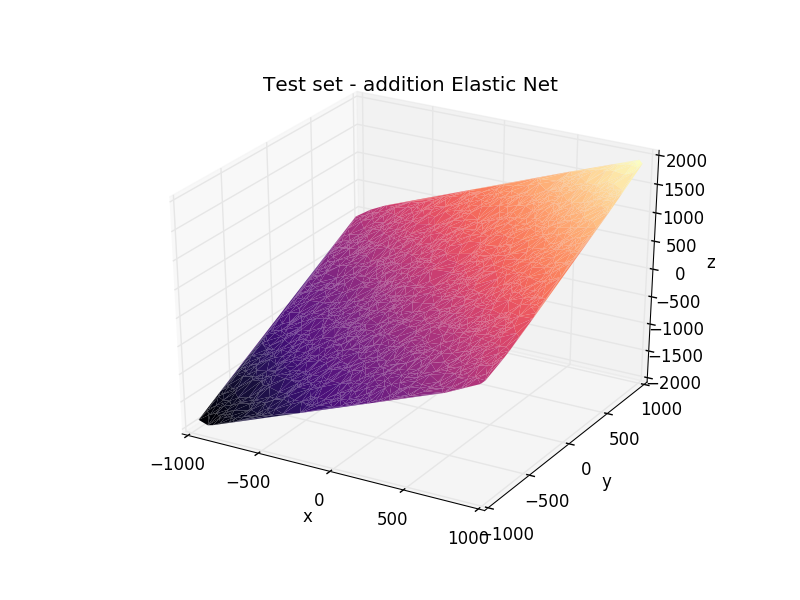
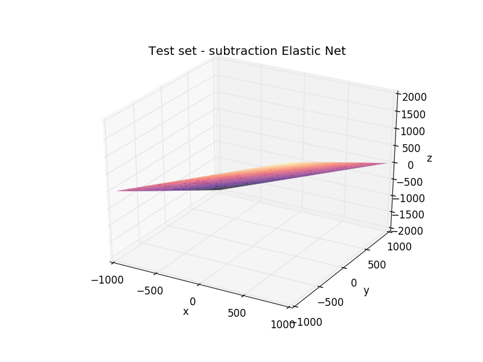
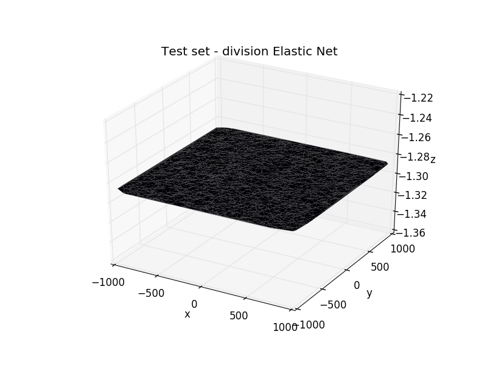
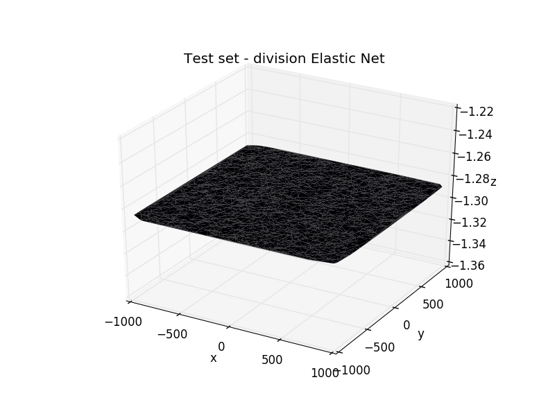

Elastic Net Regression
The Ridge Regression is very similar to Linear Regression, but introduces a regularization term to avoid over-fitting the data, specially with higher order regressions. In our case this regularization does nothing.
The coefficients are the same to those of Linear Regression with the addition of the regularization parameter.
This method combines Lasso Regression and Ridge Regression
This method has a built in cross validator, but the regualization in this case is useless.
  
